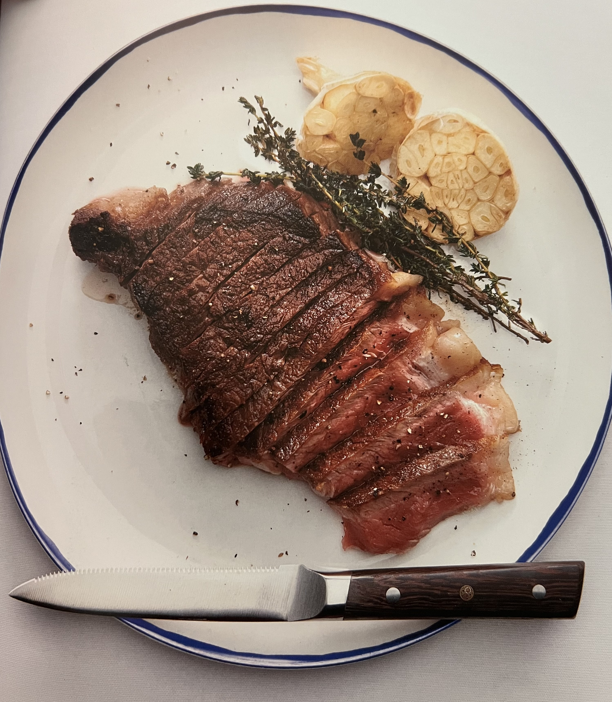

The Perfect Steak
______________________________________________

______________________________________________
Description
This recipe can sometimes cause a little controversy unless you already KNOW about its power. You can tell it's powerful just by looking at it. This method is an old-school steakhouse secret that every human being on the planet should know.
_____________
Ingredients
- 2 ribeye or New York strip steaks (1.25 to 1.5 inches thick)
- Kosher salt and freshly cracked black pepper, to taste
- 2.5 tbsp (40mL) neutral-tasting oil
- 4 tbsp (56g) unsalted butter
- 1 bunch of thyme
- 3 cloves garlic, skin-on and lightly crushed
_____________
Steps
- Pat the steaks completely dry on all sides. Season the steaks very generously with salt and pepper. (Go a little heavier than normal; don't be shy!)
- Preheat a medium skillet over medium-high heat. Add the oil, and heat until extremely hot and nearly smoking.
- Carefully place 1 or 2 steaks in the pan, depending on their size; you want at least 1 inch of separation, so cook in batches as necessary:
- Sear for 2 to 3 minutes, or until you get a deep brown crust on the bottom from edge to edge.
- Flip and sear for an additional 2 to 3 minutes
- If the steaks are the specified thickness, they should be very close to reaching medium rare at this point; if thicker, cook slightly longer.
- With the heat still on, add the butter, bunch of thyme, and garlic in the skins. Baste the steaks repeatedly until they reach medium-rare, an internal temperature of 132°F. (They will coast the rest of the way to 135°F, which is technically medium-rare.)
- Remove the steaks from the pan and let rest, uncovered, for 5 minutes before slicing.
Enjoy!
_____________